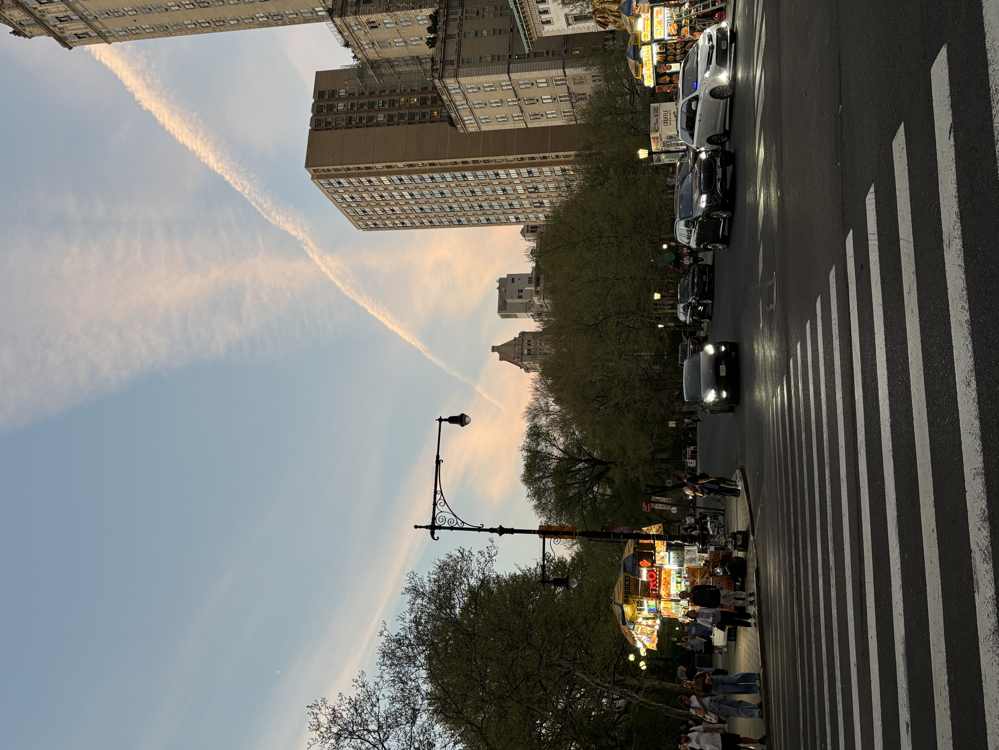

The Last Night in New York is an interactive story set during one final night in New York City before the main character leaves the next morning. The user chooses how to spend their last hours in the city by deciding where to go, who to reconnect with, or whether to stay alone and reflect. The story uses real NYC locations such as city streets and the Brooklyn Bridge. Choices lead to different endings, including leaving fulfilled with closure or leaving with regret. Users can reach the endings through multiple paths depending on the decisions they make.
Choice 1: Go explore the city Stay inside

If Go explore: Choice 2: Walk to Brooklyn Bridge Wander downtown streets
Brooklyn Bridge: Watch sunrise alone = good ending Call someone you miss = good ending
Downtown streets: Get lost and miss final moments = regret ending Find favourite café = good ending
If Stay inside: Choice 2: Sleep early = regret ending Look through photos then go outside = returns to city path